Trace a plan into worker calls
On this page
Back to implementation studies · Download the editable study


Predict how many model calls the workflow makes and what comes back from each. Use a synthetic archive with three documents. Track the gap between a planned work item and evidence that a worker completed it.
Start offline
Work the case below before you inspect the original source. The
trace, exercise and worked answers are complete offline. The local briefing tool
gives you a related trace. Follow fake_model as it reads
source windows and verify_evidence as it checks the
returned claims. The optional upstream links at the end need an internet
connection.
Trace a short archive
The request is “Find what changed in the May bill.” The fixture contains a May draft, a May signed bill and an April signed bill. A one-call baseline can receive all three filenames and their short contents. Try the baseline first and keep its answer for comparison.
Give a stub planner two tasks: check the May draft against the signed May bill, and confirm which month the signed bill covers. Let the first stub worker return “freight changed from 8 to 10, page 2.” Let the second return “billing period May, page 1.” The plan takes call 1. The first worker takes call 2. The second takes call 3. Write down where the page references enter the process. They appear in the worker outputs, after planning.
Give each request an ID. In the trace, keep request_id,
worker_id, document_id, revision,
claim, page, and status. Here
both workers can finish before combination, since neither needs the
other's output. The notebook stores the worker task type, description
and result. The additional fields belong to this exercise.
Now let the planner omit the signed May bill. Both workers may return smooth prose and valid tags. The workflow can still miss the central comparison. Add a check that the final answer cites the signed revision on every amount claim. Preserve each conflicting claim until that check can resolve it.
Find the failure before you change code
This parser expects separate lines for its tags. Predict what happens when those lines give a task a description and no type. It assigns a default type. Predict the result when the planner puts the entire task on one line. The line parser can fail to build a record. An empty task list then gives zero worker calls. That count can look efficient on a dashboard. Compare it with the actual outcome: the archive question remains open.
An empty worker response takes a different branch. The notebook adds an error marker to the returned worker result. A consumer that treats every returned string as content could cite the marker or discard the gap. Give the caller an explicit task status, and block any final claim that depends on failed evidence.
Adapt the workflow
Use stub calls to build a check for two synthetic maintenance reports. Ask which defects remain open in the newer report. Give each planned worker a unique ID, a specific document revision and a result shape. Allow one or two workers. Add a deterministic combiner for defect IDs and status.
Record these cases: one valid task, two valid tasks, an empty plan, a repeated worker ID, an empty result and a disagreement. Include the model call count per case. Handle a valid empty result as a separate case. A worker could inspect a section and find no defects.
Check your solution
The one-task and two-task paths consume two and three stub calls. Reject a malformed or repeated plan before dispatch. Distinguish a report with zero defects from an absent worker response. Attach evidence to each defect. Leave the output incomplete when an unresolved worker result could change the answer.
Retrieve from memory
- What becomes dynamic when the planner selects the work items?
- Which line in the notebook determines whether worker calls overlap?
- What evidence can a caller require before it combines claims?
Show worked answers
- The planning call chooses the subtasks. The host still chooses how it parses, runs and returns them.
- The synchronous call occurs inside the worker loop. The next iteration starts after that call returns.
- Require document identity, revision, page and status for each claim. Block claims that depend on failed workers.
Optional source inspection
Read Building
effective agents at “Workflow: Orchestrator-workers” and “Workflow:
Parallelization.” Then open Anthropic's orchestrator_workers.ipynb.
Search the notebook for parse_tasks,
FlexibleOrchestrator.process and
worker_results. Open util.py
for llm_call and extract_xml. The notebook and
helper use mutable main links read on 2026-11-20. The helper and
notebook describe an example implementation.
- Circle the first
llm_callinprocess. - Mark the inputs to
extract_xmlandparse_tasks. - Follow one parsed record through
task_typeandtask_description. - Mark the line that appends the worker result.
- Draw a box around the return value of
process.
The notebook uses a plain loop with a synchronous model call in its body. The returned data holds the initial analysis and worker outputs. The method has no later model call for synthesis.